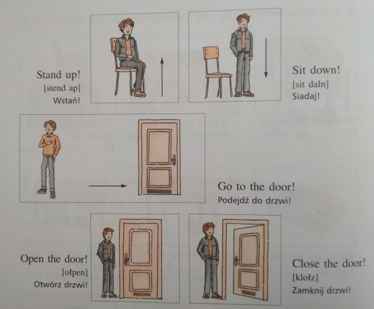
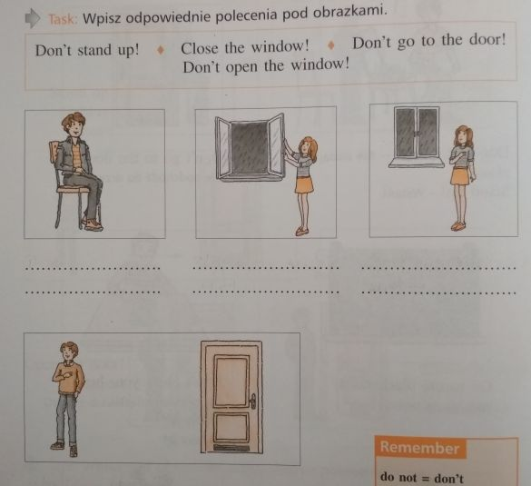

Nauczanie zdalne
Klasa 5A
wychowawca Agnieszka Bielecka
Pi±tek 29.05.2020r
HISTORIA
TEMAT: Odbudowa Królestwa Polskiego
Obejrzyj film: https://www.youtube.com/watch?v=aguoHCpXQE8
NOTATKA
W 1300 roku polsk± koronê przyj±³ w³adca Czech, Wac³aw II. W czasie jego panowania ksiêciem Kujaw, W³adys³aw £okietek. Podj±³ on próby opanowania ziemi krakowskiej. Po ¶mierci Wac³awa II W³adys³aw £okietek ponownie w³±czy³ siê do walki o tron polski. Wspomagany przez mo¿nych wêgierskich opanowa³ ziemiê sandomiersk±. W 1306 roku panowa³ ju¿ nad Ma³opolsk±, ziemi± sieradzko-³êczyck±, Kujawami, Pomorzem Gdañskim, a w 1313 r. do³±czy³ jeszcze Wielkopolskê.
W 1320 r. £okietek koronowa³ siê w Krakowie. Odt±d katedra na Wawelu sta³a siê miejscem koronacji polskich monarchów, a Kraków sta³ siê stolic± Polski. Od czasów W³adys³awa £okietka mieczem koronacyjnym królów Polski by³ Szczerbiec.
Koronacja £okietka po³o¿y³a kres rozbiciu dzielnicowemu Polski i odnowi³a Królestwo Polskie. Odt±d na okre¶lenie pañstwa polskiego u¿ywano nazwy Korona Królestwa Polskiego.
W³adys³aw £okietek zabiega³ o odzyskanie pozosta³ych ziem i w tym celu zawar³ przymierze z Wêgrami i Litw±. Kiedy krzy¿ackie wojska zniszczy³y czê¶æ Wielkopolski i z bogatymi ³upami wraca³y w stronê Pomorza, £okietek wyda³ im bitwê pod P³owcami w 1331 r. Nie zapobieg³a ona jednak zajêciu w rok pó¼niej Kujaw i ziemi dobrzyñskiej przez Zakon.
Za czasów £okietka od Polski zosta³ od³±czony ¦l±sk, którego ksi±¿êta z³o¿yli ho³d lenny Janowi Luksemburskiemu.
MATEMATYKA
Temat: Dodawanie i odejmowanie u³amków dziesiêtnych – æwiczenia.
Zapoznaj siê z tre¶ci± filmików:
https://www.youtube.com/watch?v=wBAYgnwniXI
https://www.youtube.com/watch?v=YKVuhLJl-9g
Z e-podrêcznika str. 150 zad. 2 i 3
https://flipbook.apps.gwo.pl/display/2152
POLSKI
Zapisz w zeszycie:
Temat : Wspomnienie Wielkiego Polaka.
Skopiuj link: https://www.youtube.com/watch?v=GhLVufOoI4o
Obejrzyj uwa¿nie, przemy¶l i napisz w zeszycie odpowiedzi :
- O ¿yciu jakiego Polaka jest film?
- Przestrzegania jakich warto¶ci uczy³ papie¿?
- Co dla Ciebie znaczy ,,byæ cz³owiekiem”?
Czekam na Wasze prace))
USPRAWNIANIE POLSKI
(Wiktoria R., Alan G., Krystian W., Nikola T.)
- Napisz jak siê dzi¶ czujesz ?
- Z podanych wyrazów u³ó¿ poprawne zdania i zapisz je do zeszytu:
(pamiêtaj o wielkiej literze i znakach interpunkcji)
od, razu ,po, prasowaniu, wy³±cz, ¿elazko
........................................
........................................
bawiæ, siê, nie, dzieciom, zapa³kami, pozwól
........................................
........................................
zostawaj, nie, na, ogniu, potraw, gotuj±cych, siê
........................................
........................................
doros³ych, osób, tylko, rozpalaj ,ognisko, w, obecno¶ci
........................................
........................................
USPRAWNIANIE MATEMATYKA
(Wiktoria, Patrycja, Alan)
æwiczymy zapisywanie u³amków dziesiêtnych
zobacz film : https://www.youtube.com/watch?v=YcKMNcLsLFE
przepisz przyk³ady z filmu do zeszytu.
Zapisz w u³amku zwyk³ym ( z kresk± u³amkow±)
Dodaj do siebie, a nastêpnie wynik zapisz w u³amku dziesiêtnym
kl.5a usprawnianie z matematyki- 29.05. lekcja 4
(Krystian, Micha³ G, Mateusz P)
Poæwicz my¶lenie i wyobra¼niê. Zrób listê zakupów do sklepu spo¿ywczego tak aby za 50 z³ kupiæ minimum piêæ produktów i tak aby zosta³o jak najmniej reszty. Zrób trzy takie listy ka¿d± z innymi produktami.
Pos³u¿ siê gazetkami papierowymi lub online np. https://dino.gazetki-promocyjne.net.pl/
USPRAWNIANIE MUZYKA
( zajêcia z 26 maja)
e-mail: muzykamg@wp.pl
¯yczenia muzyczne dla Matki.
W Polsce Dzieñ Matki przypada na 26 maja. W tym dniu matki s± zwykle obdarowywane laurkami, kwiatami oraz ró¿nego rodzaju prezentami przez w³asne dzieci. ¦wiêto to ma na celu okazanie matkom szacunku, mi³o¶ci i podziêkowania za trud w³o¿ony w wychowanie.
Pamiêtajmy o naszych Mamach !
Pos³uchaj piosenki w wykonaniu Arki Noego ,,Ta piosenka jest dla Mamy"
https://www.youtube.com/watch?v=pamULWD7hzY
nastêpnie spróbuj samodzielnie j± za¶piewaæ
(kliknij w link)
https://www.youtube.com/watch?v=xPVn85zKA1M
USPRAWNIANIE MUZYKA (29.05)
e-mail: muzykamg@wp.pl
Tañce narodowe -Krakowiak
Krakowiak – ¿ywy i popularny, polski taniec ludowy z okolic Krakowa, zaliczany do polskich tañców narodowych, w metrum 2/4 i w charakterystycznym, synkopowanym rytmie (zjawisko rytmiczne polegajace na przed³u¿eniu warto¶ci rytmicznej znajduj±cej siê na s³abej czê¶ci taktu o nastêpn± czê¶æ taktu) . Nazwa tañca pochodzi z XVII wieku i odnosi³a siê do grupy tañców posiadaj±cych w³asne, lokalne nazwy: mijany, dreptany, ¶cigany, przebiegany i in.
(Ogl±dnij videoklip i zwróæ uwagê na rytm tañca)
Taniec narodowy krakowiak
https://www.youtube.com/watch?v=lGUkCV6-fts
Zad. Czy poznany na muzyce utwór „Dalej ch³opcy, dalej ¿ywo" jest utrzymany w rytmie zaprezentowanego polskiego tañca narodowego?
Czwartek 28.05.2020r
ANGIELSKI
Przepisz temat do zeszytu.
Topic: I can’t dance – Ja nie potrafiê tañczyæ
Zadanie 1 Przepisz kilka nowych czasowników do zeszytu.
speak English [spiik inglisz] – mówiæ po angielsku
play volleyball – graæ w siatkówkê
play basketball - graæ w koszykówkê
drive a car [drajw a kar] – prowadziæ samochód
cook [kuk] – gotowaæ
write [rajt] - pisaæ
read [riid] - czytaæ
W przeczeniu u¿ywamy ‘cannot’ = can’t - nie potrafi
Zadanie 2 Przet³umacz zdania na jezyk polski wed³ug przyk³adu.
Przyk³ad:
I can’t swim. – Ja nie potrafie p³ywaæ.
1 She can’t cook. ............................................
2 They can’t speak English. .............................
3 We can’t count. ............................................
4 I can’t drive a car. ……………………………………
Zadanie 3 Pos³uchaj nagrania, wybierz jedno zwierz±tko i napisz dwa zdania o tym, co ono potrafi robiæ, a czego nie.
https://www.youtube.com/watch?v=oCAZMW4jMX8
INFORMATYKA
Temat: Tabele, ramki i ozdobniki w tek¶cie – powtórzenie.
- Wejd¼ na stronê e podrêcznika
https://ebook.migra.pl/dlaucznia.php?book=65
- Zapoznaj siê z punktem Warto zapamiêtaæ ze str. 123
- Odpowiedz na pytania:
- Do czego s³u¿y WordArt?
- W jaki sposób mo¿na zmodyfikowaæ kszta³ty wstawione do tekstu?
III. Tekst umieszczony w tabeli i ca³± tabelê mo¿na ………………….
Odpowied¼ napisz na komputerze lub w zeszycie i wy¶lij na mojego e-maila lub na mój nr telefonu.
Powodzenia!
MATEMATYKA
Temat: Dodawanie i odejmowanie u³amków dziesiêtnych
Obejrzyj filmik:
https://www.youtube.com/watch?v=Cp6FviEoIPk&t=75s
Z e-podrêcznika rozwi±¿ æwiczenie B i C strona 149
https://flipbook.apps.gwo.pl/display/2152
POLSKI
Zapisz w zeszycie:
Temat: W rodzinie jest interesuj±co.
Przeczytaj ( nie przepisuj!! ) fragment utworu ks. Jana Twardowskiego pt. :
,,Co wiesz o swojej rodzinie?”
Jurek mia³ napisaæ wypracowanie domowe na temat: „Co wiesz o swojej rodzinie?” Zmartwi³ siê, bo niewiele wiedzia³. […] Wiedzia³, jak wygl±da mamusia, tatu¶ i dwie m³odsze siostry, ale ca³ej rodziny nie zna³. Wiedzia³, ¿e mamusia ma na imiê Barbara, a tatu¶ – Karol. Wiedzia³, ¿e mamusia jest zawsze ³adna, nawet wtedy, kiedy jest zmêczona. Wiedzia³, ¿e jedna jego siostra lubi ¶piewaæ, a druga rysowaæ jamniki, ale to za ma³o, ¿eby napisaæ, co siê wie o swojej rodzinie. Zadzwoni³ do swojej babci Zenobii, która wiedzia³a wszystko; s³ucha³ i zapisywa³.
Odpowiedz pisemnie na pytanie: Jak my¶lisz, dlaczego babcia Jurka wiedzia³a wszystko?
MUZYKA
e-mail:muzykamg@wp.pl
Temat: Nasze dzieje,nasza tradycja.Tadeusz Ko¶ciuszko.
1.Tadeusz Ko¶ciuszko (1764-1817) – polski bohater narodowy.
,,Obywatel, który chce byæ dobrym Polakiem powinien po¶wiêciæ wszystko dla ojczyzny i byæ zawsze ludzkim i sprawiedliwym".
Ogl±dnij sfilmowan± prezentacjê pt.,,Tadeusz Ko¶ciuszko -polski bohater narodowy".
(kliknij w link)
http://www.orpeg.pl/index.php/materialy/wiedza-o-polsce-i-kultura-polska/prezentacje/726-tadeusz-kosciuszko-prezentacja-liliana-sosnowska
2.Pobudka Krakusów – „Dalej ch³opcy, dalej ¿ywo” (muz.K.Hofman, autor s³ów nieznany) – pie¶ñ z czasów powstania ko¶ciuszkowskiego, namawiaj±ca by zasilaæ oddzia³y Krakusów.
(kliknij w link i pos³uchaj ,,Dalej ch³opcy, dalej ¿ywo")
https://www.youtube.com/watch?v=eitjGahrnRM
Zadanie: Melodia piosenki jest utrzymana w rytmie polskiego tañca narodowego.Przypomnij jego nazwê.
TECHNIKA / GRUPA STOLARNIA
Lekcja
Temat: Tworzywa sztuczne. Jak zrobiæ doniczkê z butelki? - Doniczkowe koty
Proponujê wykonanie sympatycznej doniczki z plastikowej butelki.
Proszê obejrzeæ film
https://www.youtube.com/watch?v=n3BjX54X7fs
Spróbuj wykonaæ doniczkê - kotka tak jak to zosta³o przedstawione na filmie.
Nie spiesz siê. Staraj siê pracowaæ bardzo dok³adnie.
Pamiêtaj o zachowaniu bezpieczeñstwa podczas pos³ugiwania siê no¿yczkami.
W razie problemów z przeciêciem butelki popro¶ o pomoc osobê doros³±.
¯yczê mi³ej pracy.
TECHNIKA (grupa p. Ewy Krzemianowskiej)
Przepisz do zeszytu temat lekcji i podpunkty.
Temat: ¦wiat tworzyw sztucznych
- Otrzymywanie tworzyw sztucznych
Podstawowe surowce z których uzyskuje siê tworzywa sztuczne to ropa naftowa, wêgiel kamienny i kauczuk
- Rodzaje tworzyw sztucznych
– elastomery -odkszta³caj± siê pod wp³ywem ciep³a
- plastomery- nie odkszta³caj± siê
- W³a¶ciwo¶ci i zastosowanie tworzyw sztucznych
- s± odporne na dzia³anie czynników atmosferycznych
-s± dobrymi izolatorami
- s± twarde i maj± wytrzyma³o¶æ mechaniczn±
Tworzywa sztuczne wykorzystuje siê miêdzy innymi do wyrobu opakowañ, w medycynie, sporcie, przemy¶le
- Narzêdzia do obróbki tworzyw sztucznych
Zadanie – Przeczytaj rozdzia³ 5 w e podrêczniku Technika 5 Jak to dzia³a od strony 36 do 39.
- przepisz z podrêcznika – strona 39 narzêdzia jakie stosujemy do obróbki tworzyw sztucznych
- korzystaj±c z ró¿nych, dostêpnych ¼róde³ napisz jaki jest wp³yw tworzyw sztucznych na ¶rodowisko naturalne.
¦roda 27.05.2020r
ANGIELSKI
Przepisz temat do zeszytu.
Topic: I can do it – Ja potrafiê to zrobiæ
Na dzisiejszej lekcji bedziemy powtarzaæ czasownik ‘can’ i uk³adaæ z nim zdania.
W zeszycie mo¿ecie znale¼æ tabelê z czasownikiem ‘can’, ale je¶li kto¶ jej nie ma, proszê przepisaæ j± do zeszytu.
CAN- POTRAFIÆ, UMIEÆ
liczba pojedyncza:
I can – ja potrafiê
You can – ty potrafisz
He can – on potrafi
She can – ona potrafi
It can – ono potrafi
Liczba mnoga:
We can – my potrafimy
You can- wy potraficie
They can – oni/one potrafi±
Zadanie 1 Przet³umacz zdania na jêzyk polski wed³ug przyk³adu. Skorzystaj z wyrazów z listy z poprzednich lekcji.
Przyk³ad:
She can draw. - On potrafi rysowaæ.
1 I can swim. ...................................................
2 We can play football. ……………………………….
3 She can play the piano. ……………………………
4 You can ride a bike. ………………………………….
5 We can dance. …………………………………………
Zadanie 2 Teraz kliknij na link poni¿ej, pos³uchaj nagrania i napisz dwa zdania podobnie jak w przyk³adzie.
S³owniczek :
hop – skakaæ, podskakiwaæ
like [lajk]– tak jak, jak
https://www.youtube.com/watch?v=QFCkONe4J_8
Przyk³ad:
I can hop like a rabbit. – Ja potrafiê skakaæ jak królik.
I can run like ................................................................
HISTORIA
TEMAT: Spo³eczeñstwo i gospodarka Polski dzielnicowej
Obejrzyj film: https://www.youtube.com/watch?v=xWf2I7wydI8
NOTATKA
Podobnie jak na zachodzie Europy, na ziemiach polskich w XII i XIII stuleciu ukszta³towa³y siê w spo³eczeñstwie stany: duchowieñstwo, rycerstwo, mieszczañstwo i ch³opstwo
W XII stuleciu w Europie mia³ miejsce postêp w dziedzinie gospodarki. Da³o siê to zw³aszcza zauwa¿yæ w rolnictwie. Dziêki stosowaniu nowych metod uprawy, nowych narzêdzi i nawo¿eniu wzros³a wydajno¶æ. Na ziemiach polskich rozpocz±³ siê szeroki proces osadniczy zwi±zany z zak³adaniem wsi i lokowaniem miast na nowych zasadach.
Trójpolówka - sposób uprawy roli polegaj±cy na podzieleniu pola na trzy czê¶ci. Ka¿dego roku uprawiane s± tylko dwie z nich, a trzecia ugoruje , co pozwala na "odpoczywanie" ziemi. Jedno pole obsiewano jesieni± zbo¿em ozimym , drugie obsiewano wiosn± zbo¿em jarym , a trzecie pole ugorowane stanowi³o pastwisko .
Na prze³omie XII i XIII w. pojawili siê na ziemiach polskich osadnicy z Niemiec, którzy przynie¶li ze sob± nowe prawo czynszowe nazywane w Polsce „prawem niemieckim” lub „magdeburskim”. Na nim by³y zak³adane nowe wsie.
POLSKI
Zapisz w zeszycie:
Temat: Rodzinne wiêzi.
Przeczytaj ( nie przepisuj!!):
Przyjrzyj siê temu, co najbli¿sze, czyli swojej rodzinie. Niektóre s± ma³e, inne licz± wiele osób. A jaka jest Twoja rodzina?
Zapisz do zeszytu:
Genealogia- inaczej : rodowód- to....... rodu (ustna lub pisana), w której ukazuje siê kolejne … i wiêzy …. miêdzy cz³onkami rodziny. ….tworzy wiele pokoleñ wywodz±cych siê od jednego.
Wyrazy pomocne : historia, Ród, przodka, pokolenia , pokrewieñstwa
Skopiuj link:
https://www.youtube.com/watch?v=woDdgTZopVw&t=32s
I zobacz jak wygl±da³o drzewo genealogiczne Piastów.
Na kolejnej lekcji ci±g dalszy))
BIOLOGIA
Temat: Ro¶liny okrytonasienne .
Prezentacja - Ro¶liny okrytonasienne
https://www.youtube.com/watch?v=ccH0Sa-RlX0
Notatka :
Do najwa¿niejszych cech ro¶lin okrytonasiennych nale¿y wytwarzanie obup³ciowych kwiatów oraz owoców .
Kwiat obup³ciowy sk³ada siê z okwiatu oraz s³upka i prêcików osadzonych na dnie kwiatu.
Zad. 1 Przerysuj schemat budowy kwiatu , jest umieszczony w prezentacji. Zaznacz PRÊCIK , S£UPEK, DZIA£KI KIELICHA , DNO KWIATOWE, P£ATEK KORONY.
zad. 2 Odpowiedz na pytanie.
Za pomoc± czego najczê¶ciej odbywa siê zapylenie u ro¶lin okrytonasiennych ?
MATEMATYKA
Temat: Odejmowanie u³amków dziesiêtnych
Zapoznaj siê z tre¶ci± filmu, który wprowadzi Ciê w tematykê lekcji
https://www.youtube.com/watch?v=eiTqDtJAYOQ
Z e-podrêcznika rozwi±¿ æwiczenie B i C strona 149
https://flipbook.apps.gwo.pl/display/2152
USPRAWNIANIE POLSKI
(Mateusz P., Kuba M.)
- Napisz jak siê czujesz? Dlaczego tak mo¿esz siê czuæ?
- Napisz dziesiêæ przedmiotów, które móg³by¶ umie¶ciæ w ,,kapsule czasu” i zakopaæ na sto lat. Powinny to byæ przedmioty, które s± charakterystyczne dla obecnych czasów/ulubione/ najbardziej warto¶ciowe, itp. dla Ciebie . Powodzenia ))
USPRAWNIANIE MATEMATYKA
(Paulina, Micha³ G, Krystian M)
æwiczymy zapisywanie u³amków dziesiêtnych
zobacz film : https://www.youtube.com/watch?v=YcKMNcLsLFE
przepisz przyk³ady z filmu do zeszytu.
Zapisz w u³amku zwyk³ym ( z kresk± u³amkow±)
Dodaj do siebie, a nastêpnie wynik zapisz w u³amku dziesiêtnym
ZAJÊCIA TERAPEUTYCZNO -USPRAWNIAJ¡CE- MUZYCZNE
e-mail:muzykamg@wp.pl
DZIEÑ MATKI -Pamiêtajmy o naszych Mamach!
Obecnie w Polsce ¶wiêto to przypada na 26 maja. W tym dniu matki s± zwykle obdarowywane laurkami, kwiatami oraz ró¿nego rodzaju prezentami przez w³asne dzieci. ¦wiêto to ma na celu okazanie matkom szacunku, mi³o¶ci i podziêkowania za trud w³o¿ony w wychowanie.
Polski ,,poeta piosenki"-Wojciech M³ynarski i Jego znany utwór NIE MA JAK U MAMY
(kliknij w link i pos³uchaj piosenki)
https://www.youtube.com/watch?v=oasNg-d-luA
nastêpnie spróbuj za¶piewaæ
(kliknij w link)
https://www.youtube.com/watch?v=_0Y54CrQ4CI
USPRAWNIANIE RUCHOWE
(Alan G., Krystian M.)
Proszê o pomoc w æwiczeniach rodziców lub rodzeñstwo.
Bardzo proszê wykonanie podanych æwiczeñ. Je¿eli które¶ z zaproponowanych æw. sprawi trudno¶æ w wykonaniu mo¿na je u³atwiæ zgodnie z mo¿liwo¶ciami dziecka.
https://www.youtube.com/watch?v=LYtNu2u___Y
Wtorek 26.05.2020r
GODZ. WYCHOWAWCZA
Temat: Zdrowy styl ¿ycia- aktywno¶æ fizyczna.
Skopiuj link :
https://www.youtube.com/watch?v=jgJOS26G1wY&list=PLRReVYm0l4S5vk8L2NjvLVhCg_wN7RHVP
Zastanów siê i odpowiedz ustnie : Co wg Ciebie znaczy ,,zdrowy styl ¿ycia” (jaki to styl) ? Co nam daje aktywno¶æ fizyczna? Czy jeste¶ aktywny fizycznie?
POLSKI
Zapisz w zeszycie:
Temat: Kto jest wa¿niejszy …?
Przeczytaj ( nie przepisuj!!) wiersz:
Wiersz o Mamie i Tacie
Mama, Tato to najpiêkniejsze s³owa,
Powtarzam je sobie wci±¿ od nowa,
Tata przychodzi pe³en rado¶ci,
Bo w naszym domu jest du¿o mi³o¶ci.
Mi³o z rodzicami spêdzam czas,
Wszystko na dworze bardzo cieszy nas.
Ci±gle s³yszymy wiatru szum,
Kto¶ odbija pi³kê: bum, bum, bum.
Mama pracuje ca³y
mi dniami,
A my z Tat± je¼dzimy rowerami.
Czêsto pomagam Mamie w sprz±taniu
Dzisiaj pomog³em w talerzy zmywaniu.
Tak up³ywaj± szczê¶liwe dni,
Niczego wiêcej nie trzeba mi.
Mi³o¶æ rodziców najwa¿niejsza jest,
Nadaje memu ¿yciu sens.
(autor: uczniowie pewnej szko³y)
Odpowiedz pisemnie do zeszytu na pytania:
- Dlaczego tak wa¿ni w ¿yciu s± rodzice?
- Jakie cechy autor wiersza przypisuje mamie, a jakie cechy posiada tata?
- W jaki sposób Ty pomagasz swojej mamie, swojemu tatowi?
ANGIELSKI
Przepisz temat do zeszytu.
Topic: Do it! Don’t do that (II)
Zrób to! Nie rób tego!
Na dzisiejszej lekcji nauczymy siê wydawaæ ró¿ne rozkazy.
TRYB ROZKAZUJ¡CY
1) W zdaniach twierdz±cych u¿ywamy podstawow± formê czasownika:
Go! – Id¼!
Swim! – P³ywaj!
Count! [kaunt] – Licz!
2) W zdaniach przecz±cych u¿ywamy Don’t.
Don’t swim! – Nie p³ywaj!
Don’t write! – Nie pisz!
Don’t read! – Nie czytaj!
Zadanie 1 Popatrz na rysunki i przeczytaj zdania (w za³±czniku).


Zadanie 2 Przeczytaj polecenia, przet³umacz je i wpisz pod odpowiednimi obrazkami. Skorzystaj z listy czasowników z poprzedniej lekcji. (w za³±czniku)
RELIGIA
Temat: Poznajemy Ducha ¦wiêtego.
- Pomódl siê s³owami pie¶ni „ Duchu ¦wiêty”.
https://www.youtube.com/watch?v=f69iDFKmnI0
- Zobacz program „Ziarno” po¶wiêcony Trzeciej Osobie Trójcy ¦wiêtej -Duchowi ¦wiêtemu.
https://vod.tvp.pl/video/ziarno,przyjdz-duchu-sw,19915150
- Zapamiêtaj, jak nazywa siê dzieñ zes³ania Ducha ¦wiêtego. Napisz w jakim sakramencie otrzymujemy dary Ducha ¦wiêtego.
Pozdrawiam wszystkich uczniów
W-F CH£OPCY
Temat : Doskonalenie sprawno¶ci fizycznej
Uwagi wstêpne :
- æwicz tylko,jak jeste¶ zdrowy,je¶li ¼le siê czujesz,co¶ Cie boli,nie æwicz
- staraj siê æwiczyæ w stroju sportowym,przestrzegaj±c zasad bezpieczeñstwa
- przed æwiczeniami przewietrz pokój (æwicz przy otwartym/uchylonym oknie)
- æwiczenia g³ówne poprzed¼ rozgrzewk± ,wykonywan± na lekcjach wf w szkole
- pamiêtaj o rozlu¼nianiu miê¶ni pomiêdzy poszczególnymi æwiczeniami
Propozycja æwiczeñ na dzisiejszych zajêciach :
- Bieg w miejscu (3-4 min.),trzymaj równe tempo
- Stoj±c w rozkroku,ramiona w bok, sk³on tu³owia, wykonaj skrêtosk³ony raz
do prawej,raz do lewej nogi - po 5
- Stoj±c w lekkim rozkroku,wykonaj 2 x 10 przysiadów
- Wykonaj 10 podskoków
- obunó¿
- na prawej nodze
- na lewej nodze
- Le¿±c przodem podpieramy siê na wyprostowanych ramionach,jedn± nogê
uginamy i wykonujemy przeskok ( raz prawa,raz lewa ) - 20 powtórzeñ
- Wykonaj 2 x 10 pompek ( mog± byæ na kolanach).
- Siad prosty,nogi rozwarte,wykonaj 10 sk³onów ( raz do jednej,raz do drugiej
nogi )
- W le¿eniu na plecach,(nogi podkurczone,ramiona wzd³u¿ tu³owia) wykonaj
2 x 15 brzuszków
- Æwiczenie uspokajaj±ce - le¿±c na plecach ,cia³o rozlu¼nione,zamykamy
oczy ( liczymy do 50 )
Ka¿d± seriê powtórz 2x , przerwa pomiêdzy seriami ok. 10 min.
Wykonuj±c æwiczenia w domu wspomagaj siê nagraniami video dostêpnymi
w serwisie internetowym You Tube .Wybierz propozycje æwiczeñ dla pocz±tkuj±cych , które s± dostosowane do Twoich mo¿liwo¶ci,opieraj±cych siê
na æwiczeniach jakie znasz ze szkolnych lekcji wf.
Dziêkujê
W-F DZIEWCZYNY
zostañwdomu#trenuj w domu !!!
Potrzebne przybory :pi³eczka lub zwiniête skarpetki
Przypominam o zasadach bhp podczas æwiczeñ w domu,tak jak na lekcjach wf w szkole. Proszê równie¿ pamiêtaæ, ¿e æwiczymy tylko i wy³±cznie jak jeste¶my zdrowi.
Pamiêtajmy przed rozpoczêciem æwiczeñ ,aby zrobiæ 10 minutow± rozgrzewkê (æwiczenia pamiêtamy z lekcji)
Dzisiaj nauczymy siê techniki rzutu pi³eczk±.Proszê obejrzyjcie dok³adnie filmik,a nastêpnie w miarê mo¿liwo¶ci powtórzcie. Æwiczenia najlepiej wykonajmy na ¶wie¿ym powietrzu.Dzisiaj liczy siê technika rzutu,a nie kto najdalszy rzut.
https://youtu.be/UwDQ2gmrYoQ?list=TLPQMjEwNTIwMjDnc2YUc8aS9g
USPRAWNIANIE POLSKI
- Napisz jak siê czujesz? Dlaczego tak mo¿esz siê czuæ?
- Napisz dziesiêæ przedmiotów, które móg³by¶ umie¶ciæ w ,,kapsule czasu” i zakopaæ na sto lat. Powinny to byæ przedmioty, które s± charakterystyczne dla obecnych czasów/ulubione/ najbardziej warto¶ciowe, itp. dla Ciebie . Powodzenia ))
USPRAWNIANIE MATEMATYKA
(Krystian W, Nikola T) (Mateusz P, Jakub M)
æwiczymy zapisywanie u³amków dziesiêtnych
zobacz film : https://www.youtube.com/watch?v=YcKMNcLsLFE
przepisz przyk³ady z filmu do zeszytu.
Zapisz w u³amku zwyk³ym ( z kresk± u³amkow±)
Dodaj do siebie, a nastêpnie wynik zapisz w u³amku dziesiêtnym
WD¯
Temat: Dojrzewam. (ch³opcy)
Proszê obejrzeæ film: https://www.youtube.com/watch?v=YavEH9CdoXM
Poniedzia³ek 25.05.2020r
GEOGRAFIA
Temat: Sprawdzian wiadomo¶ci.
Przepisz do zeszytu sprawdzian lub wydrukuj i prze¶lij mi na adres: boz_lis@interia.pl
Zad. 1
Narysuj las strefy umiarkowanej i podpisz jego warstwy ( gleba i ¶ció³ka, podszyt, runo le¶ne, korony drzew)
Zad. 2
W której warstwie lasu mieszka?
Wiewiórka ………………………
Sarna…………………………
¯mija ………………………..
Mrówki……………..
Kret…………………………….
Zad. 3
Napisz, czego nie wolno robiæ w lesie
Nie wolno………………………………………………
Nie wolno………………………………………………………
Zad. 4
Której strefy klimatycznej dotyczy opis ( sawanna, d¿ungla, pustynia, step,)
S± tu 2 pory roku sucha i deszczowa…………………………..
Jest tu w dzieñ bardzo gor±co, w nocy zimno, rzadko padaj± deszcze……………………..
Jest tu bardzo wilgotno i gor±co; codziennie padaj± deszcze…………………………………
Zad.5
Podkre¶l sk³adniki pogody: temperatura powietrza, pó³noc, zachmurzenie, gwiazdy, wiatr, opady, wysoko¶æ terenu, ci¶nienie atmosferyczne, grubo¶æ, wilgotno¶æ powietrza.
RELIGIA
Temat: „Wniebowst±pienie Jezusa”
- Zrób znak krzy¿a, w prostej modlitwie podziêkuj Jezusowi za Jego opiekê nad tob±.
- Zobacz program „Ziarno” opowiadaj±cym o Wniebowst±pieniu Jezusa.
https://vod.tvp.pl/video/ziarno,wniebowstapienie-panskie,1703095
- Zastanów siê, kto dzisiaj jest ¶wiadkiem Jezusa?
- Pomódl siê s³owami pie¶ni.
https://www.youtube.com/watch?v=lCdHW_B6SKM
POLSKI
Zapisz w zeszycie:
Temat : Rozmowa – czyli jak wymieniæ my¶li za pomoc± s³owa.
Zapisz w zeszycie: dialog to rozmowa dwóch osób.
Pamiêtasz, jak nazywamy wypowied¼ jednej osoby ? Sprawd¼ w google co znaczy : monolog.
Przeczytaj i przepisz do zeszytu dialog. Zaznacz na kolorowo w nim wszystkie znaki przestankowe ( napisz co to za znak) :
- Wygra³em zawody p³ywackie !
- Naprawdê ?! ¯artujesz.
-Co¶ Ty ! P³yn±³em jak nigdy w ¿yciu…
- Nies³ychane ! Gratulujê !
Pozdrawiam ))
MATEMATYKA
Temat: Dodawanie u³amków dziesiêtnych
Zapoznaj siê z tre¶ci± filmu, który wprowadzi Ciê w tematykê lekcji
https://www.youtube.com/watch?v=14vMyird3vo
Z e-podrêcznika ze strony 146 i 147 zapisz do zeszytu przyk³ady (na zielonym tle) i rozwi±¿ æwiczenie D strona 147 oraz zadanie 1 i 2
https://flipbook.apps.gwo.pl/display/2152
PLASTYKA
TEMAT : Serce - forma przestrzenna z papieru
/Do wykonania pracy bêdzie potrzebna : kolorowa kartka papieru, no¿yczki ,klej/
W sztuce wspó³czesnej czêsto spotykamy siê z formami przestrzennymi.
Nazywamy tak niektóre rze¼by, ale g³ownie dzie³a reprezentuj±ce nowe formy w sztuce,
zwykle wykonane z nietypowych materia³ów np. plastiku, metalu ,tkaniny lub ró¿nych po³±czeñ.
Wykonajcie dekoracyjn± formê z papieru - serce . To te¿ bêdzie ma³a forma przestrzenna
tak jak rze¼ba ale z papieru . Obejrzyjcie uwa¿nie film :
https://www.youtube.com/watch?v=qw1JhdDCRvA
wykonajcie prace wed³ug instrukcji ale wielko¶æ ko³a mo¿e byæ ró¿na
/to prosta forma ale pracujcie poma³u i uwa¿nie/
Gotow± prace mo¿ecie podarowaæ mamie na Dzieñ Matki.
Zróbcie zdjêcie pracy i wy¶lijcie na adres: beata.chmiel20@wp.pl
W-F DZIEWCZYNY
Temat:Technika startu niskiego
zostañwdomu#trenuj w domu !!!
Przypominam o zasadach bhp podczas æwiczeñ w domu,tak jak na lekcjach wf w szkole. Proszê równie¿ pamiêtaæ, ¿e æwiczymy tylko i wy³±cznie jak jeste¶my zdrowi.
Pamiêtajmy przed rozpoczêciem æwiczeñ ,aby zrobiæ 10 minutow± rozgrzewkê (æwiczenia pamiêtamy z lekcji)
Dzisiaj trochê pobiegamy.Proszê obejrzyjcie dok³adnie filmik,a nastêpnie w miarê mo¿liwo¶ci powtórzcie. Æwiczenia najlepiej wykonajmy na ¶wie¿ym powietrzu
https://youtu.be/5ZaQKjEH5rs?list=TLPQMjEwNTIwMjDnc2YUc8aS9g
W-F CH£OPCY
Temat : Æwiczenia wzmacniaj±ce nóg
Uwagi wstêpne :
- æwicz tylko wtedy , kiedy jeste¶ zdrowy
- staraj siê æwiczyæ w stroju sportowym
- æwicz przy otwartym/uchylonym oknie
- przed æwiczeniami g³ównymi wykonaj 10 min. rozgrzewkê
- przestrzegaj zasad bezpieczeñstwa
- pamiêtaj o rozlu¼nianiu miê¶ni po ka¿dym æwiczeniu
Propozycja æwiczeñ :
- Bieg w miejscu,wysoko unosz±c kolana - licz do 20
- klaskaj±c pod kolanami ( raz pod prawym,raz pod lewym)
- uderzaj±c piêtami o po¶ladki
- Stoj±c w lekkim rozkroku ,wykonaj przeskok w bok i z powrotem - 10x
- Staj±c w pozycji wykroczno- zakrocznej ( lewa noga z przodu , prawa
z ty³ )wykonaj przeskok i z powrotem - liczymy do 12
- Stoj±c w lekkim rozkroku wykonaj 2 x 10 przysiadów na ca³ych stopach
- Wykonaj 2 x 10 pajacyków
- Przejd¼ do pozycji le¿±cej na plecach ,unie¶ tu³ów,podpór ramionami
i wykonaj tzw. rowerek 2 x licz±c do 20
- W pozycji stoj±cej,wykonaj podskoki raz na prawej, razy na lewej nodze
po 10 x
- Na zakoñczenie serii æwiczenia oddechowe - ramiona w górê ( wdech),
sk³on ( wydech ) - powtórz 5 razy
Ka¿d± seriê wykonaj 2x,przerwa pomiêdzy seriami ok. 10 min.
Dziêkujê
USPRAWNIANIE TAÑCE
(WIKTORIA R,PATRYCJA S,KRYSTIAN W,NIKOLA T)
Dzieñ dobry .
Wysy³am kolejny filmik...skoczny,krótki i bardzo ³atwy.Mo¿na przy nim siê fajnie bawiæ.Proponujê bez obci±¿enia tzn. butelek. Nauczcie siê pierwszej czê¶ci uk³adu. Æwiczymy równocze¶nie pracê ramion i nóg
https://youtu.be/fOSbUQknHXM
USPRAWNIANIE PLASTYKA
/MATEUSZ P. MICHA£ G. JAKUB M. ALAN G./
ZADANIE: Z plasteliny wykonajcie kszta³t ¯ABY
wed³ug instrukcji z filmu:
https://www.youtube.com/watch?v=Qfto958glHI
mo¿ecie zrobiæ kilka ¿ab ró¿nego koloru.
USPRAWNIANIE LOGOPEDIA
(Paulina G., Krystian M. )
Æwiczenia oddechowe - usi±d¼ wygodnie i zrób 5 wdechów i wydechów przez nos, pamiêtaj, ¿e usta s± zamkniête; nabierz powietrza przez nos, zatrzymaj je na chwilê, wypu¶æ przez usta, powtórz æwiczenie 3 razy,
Æwiczenia s³uchu - usi±d¼, zamknij oczy i nazwij 2 d¼wiêki dochodz±ce z otoczenia.
Æwiczenia usprawniaj±ce jêzyk (przygotowanie do wywo³ania g³oski /r/) - unie¶ jêzyk do górnych dzi±se³, cofnij jêzyk wzd³u¿ podniebienia, przypomnij sobie æwiczenie nazwane "konik" (kl±skanie) - zrób je 5 razy, Powtarzaj sylaby, jêzyk u³ó¿ przy górnych zêbach: d(r)a d(r)o d(r)e d(r)u d(r)y
Archiwum
18-22.05
11-15.05
04-08.05
27-30.04
20-24.04
15-17.04
06-08.04
30.03-03.04
25-27.03